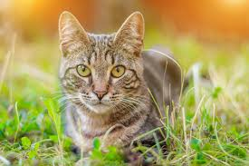
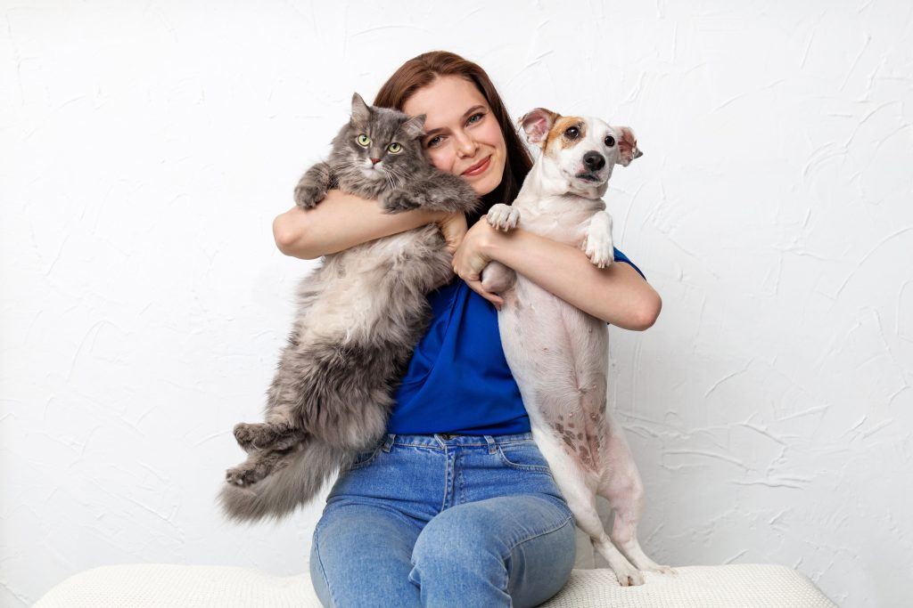
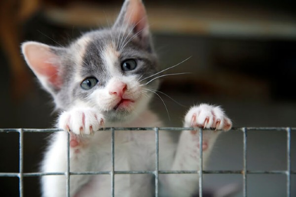
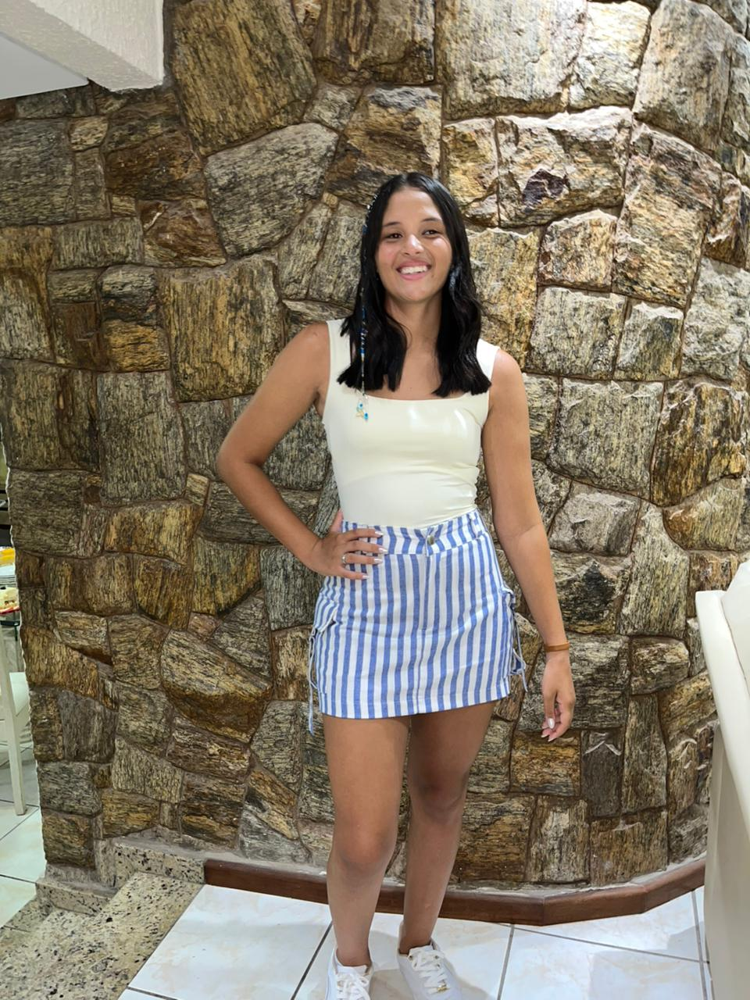
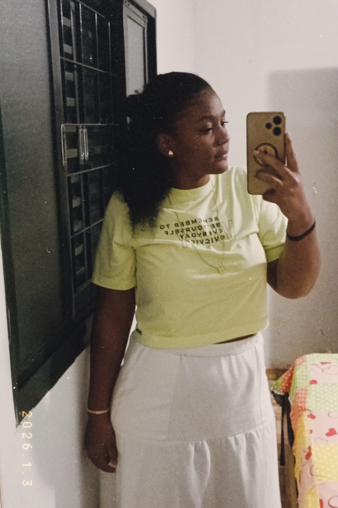
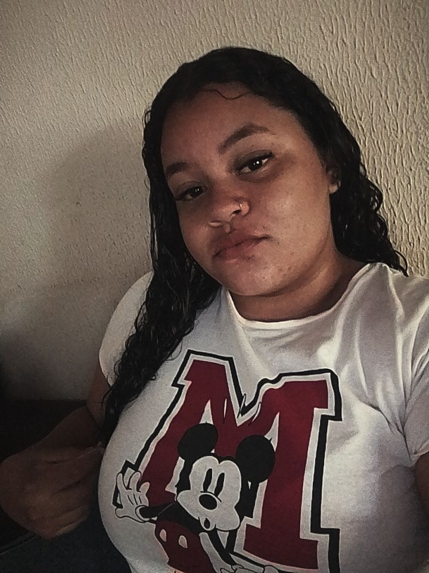
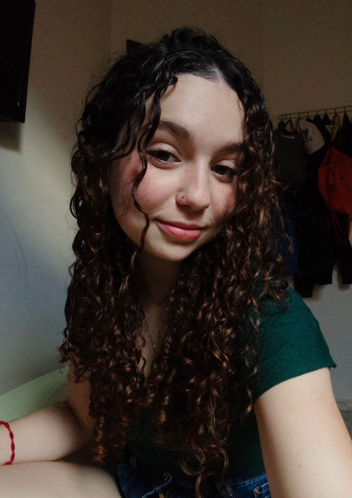
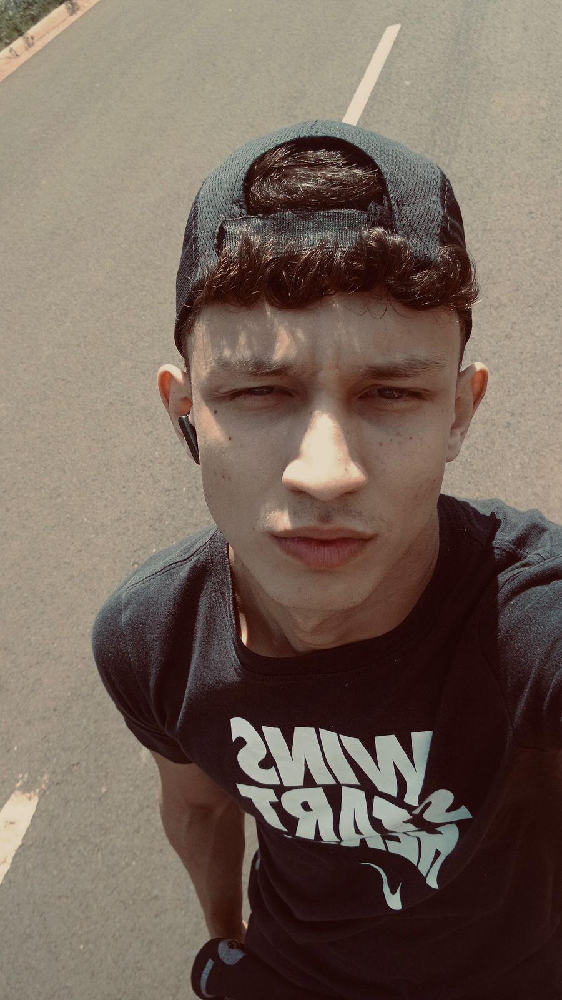

Sobre o Instituto AuMigo
A AuMigo é um cantinho cheio de amor e carinho para todos os bichinhos que precisam de uma segunda chance! 💕 Nosso foco principal são os cachorrinhos, mas estamos sempre de portas abertas para outros animaizinhos que precisem de ajuda. Aqui, todos os peludinhos são tratados como parte da nossa família!
Nosso trabalho é garantir que cada patinha resgatada tenha abrigo, comida quentinha, cuidados veterinários e, claro, muito carinho. A missão da AuMigo vai além de resgatar, queremos que todos os nossos amiguinhos encontrem uma família responsável e cheia de amor para chamar de sua.
Porque acreditamos que todo bichinho merece ser amado, respeitado e ter um lar cheio de alegria. 🐾✨





Quem somos
Somos as criadoras da AuMigo, um projeto feito com amor para ajudar animais a encontrarem cuidado, proteção e um novo lar. Nosso objetivo é espalhar carinho, conscientização e incentivar a adoção responsável.

Amanda Freitas da Silva

Amanda do Carmo Silva

Raquel Beatriz da Silva
Ana Julia de Carvalho Urbanin Batista

Júlia Isidoro de Souza

Octávio Silva Martins
Nossos valores
- Amor e respeito aos animais
- Adoção responsável
- Compromisso com o bem-estar animal
- Transparência com a comunidade
- Resgate ético e humanizado
- Combate ao abandono e maus-tratos
- Educação e conscientização sobre proteção animal
- Responsabilidade social e ambiental
- Dedicação ao cuidado e recuperação dos animais
- Trabalho em equipe e colaboração
Nosso impacto
+50 animais resgatados
+30 adoções realizadas
+100 atendimentos veterinários
+20 campanhas de conscientização realizadas
+15 animais em reabilitação
+200 pessoas alcançadas em ações educativas
+10 parcerias com clínicas e voluntários
+80 animais alimentados mensalmente
📞 Contato
(17) 99152-9098
(17) 99834-1207
(17) 99671-8452
amanda.silva23@portalsesisp.org.br
amanda-silva695@portalsesisp.org.br
raquel.beatriz@portalsesisp.org.br
ana.carvalho64@portalsesisp.org.br
julia.isidoro@portalsesisp.org.br
octavio-martins130@portalsesisp.org.br